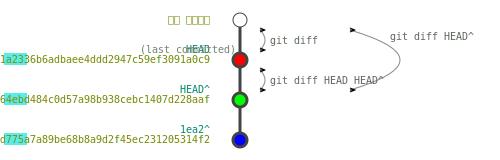

유용한 기능
폴더, 파일 무시
Git 작업폴더에 다음과 같은 이유로 Trace가 원하지 않는 파일들이 생성 될 수 있습니다.
- 임시 파일 또는 폴더
- 프로그램 부산물(자동생성)
작업폴더 최상단에 .gitignore파일을 생성한 뒤, 문서편집기로 다음과 같이 작성할 수 있습니다.
.gitignore 예제test/*
commit.log
- test폴더 이하 모든 파일을 무시합니다.
- commit.log파일을 무시합니다.
또는 다음과 같이 패턴을 지정할 수 있습니다. 패턴에 관련된 내용은 git-scm.com의 패턴 형식를 따릅니다.
| 패턴 | 해석 |
|---|---|
| 빈칸 | 가독성용 띄어쓰기 허용 |
| \( | ackslash) 특수문자(\#, \ , #! ...) |
| # | 코멘트 |
| " | "(space) 무시 |
| ! | 패턴 무시 |
| / | 디렉토리 |
| * | /를 제외한 모든 문자 |
| ? | /를 제외한 한 문자 |
| [] | range notation,[a-z]: a ~ z |
| ** | 모든 문자 |
로그 분석
git log 예제git log --since="2023-01-01" 2023년 1월 1일 이후의 commit 검색
git log abc1234..HEAD abc1234 해쉬 이후의 commit 검색(abc1234제외)
git log abc1234^..HEAD abc1234 해쉬 이후의 commit 검색(abc1234포함)
git log -5최근 5개 검색
git log --grep="bug fix"commit log에 "bug fix"가 있는 commit검색
아래 시나리오에서:
- HEAD = b722d1a2336b6adbaee4ddd2947c59ef3091a0c9 = b722(최소 4개 이상)
- 1ea2064ebd484c0d57a98b938cebc1407d228aaf = 1ea2 = HEAD^ = b722^
- 04b12d775a7a89be68b8a9d2f45ec231205314f2 = 04b1 = 1ea2^
C:\myProject> git log 04b1^..HEAD commit b722d1a2336b6adbaee4ddd2947c59ef3091a0c9 (HEAD -> master) Author: iseohyun <iseohyun@hanmail.net> Date: Sat Dec 28 05:23:21 2024 +0900 rm 03_Shebang.py commit 1ea2064ebd484c0d57a98b938cebc1407d228aaf Author: iseohyun <iseohyun@hanmail.net> Date: Sat Dec 28 05:22:34 2024 +0900 update filelist commit 04b12d775a7a89be68b8a9d2f45ec231205314f2 Author: iseohyun <iseohyun@hanmail.net> Date: Sat Dec 28 05:22:02 2024 +0900 add filelist.txt
변경 내용 확인
diff 명령을 통해 두 버전commit간의 차이를 알 수 있습니다.
git diff 예제git diff작업디렉터리와 HEAD와의 차이점을 출력합니다.
git diff HEAD^작업디렉터리와 HEAD 바로 이전 commit과의 차이점을 출력
git diff HEAD HEAD^HEAD와 HEAD 바로 이전의 차이점 출력
git diff --file-only변경된 파일명만 나열

git-diff
"git-diff.svg", iseohyun.com, CC-BY-SA
파일 1개(03_Shebang.py)를 삭제한 뒤, diff를 실행
C:\myProject> rm .\03_Shebang.py C:\myProject> dir > .\filelist.txt C:\myProject> git status On branch master Changes not staged for commit: (use "git add/rm..." to update what will be committed) (use "git restore ..." to discard changes in working directory) deleted: 03_Shebang.py modified: filelist.txt no changes added to commit (use "git add" and/or "git commit -a") C:\myProject> git add . C:\myProject> git commit -m "rm 03_Shebang.py" [master b722d1a] rm 03_Shebang.py 2 files changed, 4 deletions(-) delete mode 100644 03_Shebang.py C:\myProject> git diff HEAD^ diff --git a/03_Shebang.py b/03_Shebang.py deleted file mode 100644 index 0ca3c66..0000000 --- a/03_Shebang.py +++ /dev/null @@ -1,4 +0,0 @@ -#!/usr/bin/env python3 -# Shebang (#!, 셔뱅): 유닉스 계열 운영체제에서 실행되는 스크립트 - -print("Shebang(#!)은 첫 줄에 들어갑니다.") diff --git a/filelist.txt b/filelist.txt index c172c63..59b5a81 100644 Binary files a/filelist.txt and b/filelist.txt differ
임시저장
stash명령을 통해서 임시 저장, 불러오기를 할 수 있습니다.
git stash 작업폴더와 HEAD와의 diff를 임시저장
git stash save "임시저장 요약" 작업폴더와 HEAD와의 diff를 임시저장(저장 요약 기록)
git stash push -m "푸쉬 요약" 파일명.. 일부 파일만 임시저장
git stash list 현재 임시저장된 목록 출력
git stash pop 임시 저장 목록의 역순으로 복원
git stash pop 1 특정 임시 저장 복원
git stash drop 임시 저장 삭제(저장 역순)
git stash drop 0 특정 임시 저장 삭제
git stash clear 모든 임시 저장 삭제
 git stash
"git-stash.svg", iseohyun.com, CC-BY-SA
git stash
"git-stash.svg", iseohyun.com, CC-BY-SA